Как сделать игровые ассеты из картинок на домашней видеокарте: 3D-модель из одного концепта, версии на 20, 5 и 1,5 тысячи треугольников, набор предметов в одном стиле, спрайты на 32 направления, пиксель-арт и гекс-плитки. В конце всё собрано в маленькую игру прямо на странице.
Витрина: три модели из одной картинки каждая
Турель, грибной домик и гном-инженер для уютной фэнтези-игры в жанре tower defense. Каждая модель прошла один путь. Сначала Krea 2 рисует картинку-концепт, затем Pixal3D превращает её в 3D-модель с текстурами, а встроенный конвейер ComfyUI урезает её до игрового бюджета. Всё работало локально на видеокарте с 16 ГБ памяти, по 2–5 минут на модель. Модели ниже живые: крутите их мышкой или пальцем, приближайте колёсиком и переключайте бюджет треугольников.
Треугольников
20 000 треугольников · текстуры 2K · 2,5 МБ
Файлы — веб-копии с текстурами WebP: 0,4–2,5 МБ на модель. Сырые модели генератора весили 44–56 МБ. Расширение .glb.wasm не опечатка: часть хостингов не отдаёт .glb, а .wasm передаётся байт в байт, и загрузчик glTF узнаёт формат по подписи внутри файла.
Играть: гном на поляне ЗАМЕР
Все ассеты главы собраны в маленькую игру прямо в браузере. Гном ходит по поляне, упирается в предметы и собирает монетки. Один и тот же мир показан в трёх стилях: 3D-модели, гекс-доска из ИИ-плиток и пиксель-арт, сделанный из тех же моделей. Звуки синтезирует сам браузер, скачивать нечего.
Сцена лёгкая для любого браузера: 28 предметов и гном — 30 вызовов отрисовки и 120 тысяч треугольников, 120 кадров в секунду на ноутбуке. Гекс-доска из 61 целой плитки — 67 вызовов и 305 тысяч треугольников. Кнопка «Статистика» в игре показывает эти числа вживую. ЗАМЕР
Модель для веба — 5k треугольников и текстуры 512 px в WebP: около 0,3 МБ. Вся поляна весит 6,7 МБ. ЗАМЕР
Столкновения — окружности, радиус берётся из модели: круг, покрывающий 80 % её следа на земле. Флажки и тонкие ручки не мешают пройти. ПРАВИЛО
Красивая картинка — ещё не игровой ассет ИСТОЧНИК
Игровой арт работает только внутри конкретной игры. Разработчик tower defense Антон Чуев (канал Tearevo) делал всю графику с ИИ и сформулировал главную проблему: генератор быстро даёт сырой материал, но подогнать его к игре должен человек. Мы взяли его правила как чек-лист и добавили технические требования к 3D.
Одна камера. У игры фиксированный ракурс. Объект, нарисованный чуть выше или ниже, выглядит вклеенным, даже если сам по себе красив.
Читаемость на реальном размере. Враг и турель должны читаться, когда они занимают 60 пикселей на экране, а фон не должен спорить с ними. Проверяйте в игре, а не на увеличении.
Бюджет треугольников. Генератор выдаёт сотни тысяч треугольников, а предмету в игре обычно хватает от тысячи до двадцати тысяч. Урезать нужно всегда.
Развёртка и текстуры. Автоматическая UV-развёртка генератора — тысяча мелких островов. Текстуры PBR: цвет, нормали, шероховатость, металл, затенение. Частый дефект — свет, «запечённый» прямо в цвет. Для игры хватает 1–2K, а не 4K.
Формат. glTF / GLB открывают Godot, Unity, Unreal и Blender, и браузер тоже.
Лицензия. Локальные веса Hunyuan3D 2.x по лицензии Tencent не действуют в ЕС, Великобритании и Южной Корее. TRELLIS.2 и Pixal3D — MIT.
Чем делать 3D в октябре 2026 ИСТОЧНИК
Модель
Где работает
Лицензия
Что умеет
Pixal3D (Tsinghua + Tencent ARC, SIGGRAPH 2026)
локально, встроена в ComfyUI
MIT
картинка → сетка, выровненная по ракурсу картинки; PBR; режим «4 ракурса»
качество выше открытых; ретопология, риг, анимация
С конца августа 2026 TRELLIS.2 и Pixal3D встроены прямо в ComfyUI, без сторонних нод. Вместе с ними пришли ноды для работы с сеткой: упрощение (Decimate), ремеш, сглаживание нормалей, новая UV-развёртка, запекание текстуры, карт нормалей и затенения. Команда ComfyUI сама пишет, что платные генераторы пока лучше. Открытые модели берут бесплатностью, локальностью и чистой лицензией.
Концепт → 3D-модель за 2–3 минуты ЗАМЕР
Krea 2 Turboконцепт 6–12 сровный свет без теней, серый фон, объект целиком
Blender · Godotпроверкаметрики, 4 ракурса, импорт в движок
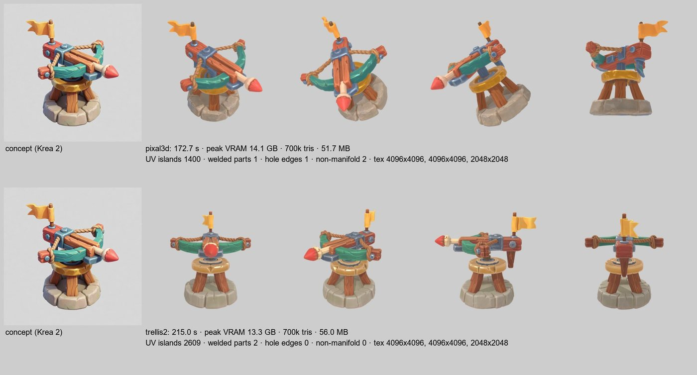
Турель: Pixal3D против TRELLIS.2. Pixal3D держит концепт: арбалет сверху, как нарисовано, цвета те же. TRELLIS.2 придумал по-своему: симметричный арбалет вдоль оси и лишнюю доску сзади.
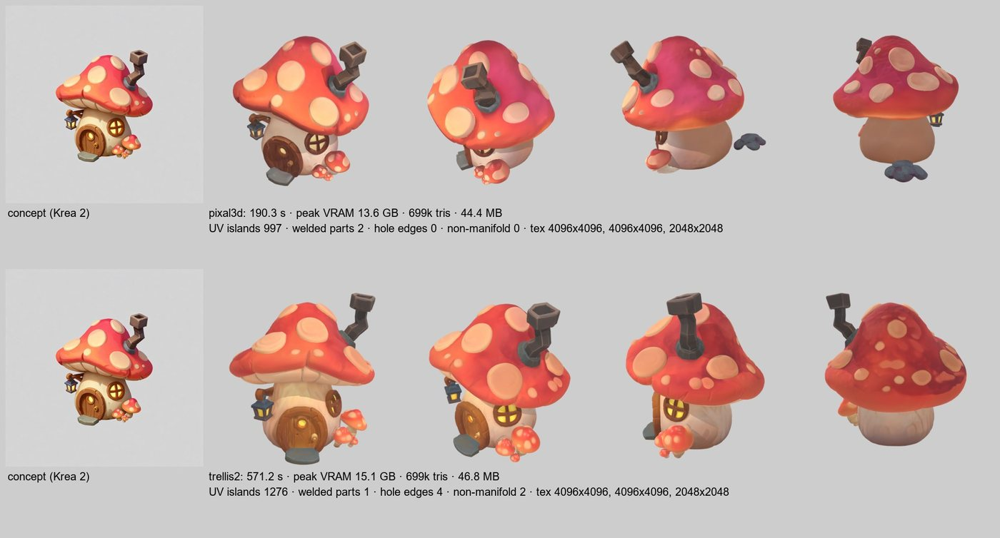
Слабое место — невидимая сторона. Спереди домик Pixal3D точный, но сзади ствол стал плоским и коричневым, шляпка порозовела, ступенька висит отдельно. TRELLIS.2 строит спину полнее, но считал 9,5 минуты на пределе памяти.
Модель
Время на модель
Пик видеопамяти
Оперативная
Сырая сетка
Pixal3D
99–190 с
13,6–14,1 ГБ
≤ 50 ГБ
700 тыс. треугольников, текстуры 4K, 1000–1400 островов UV, 44–52 МБ
TRELLIS.2
106–571 с
13,3–15,1 ГБ
≤ 51 ГБ
то же; 1170–2600 островов
Pixal3D — по умолчанию. Следует концепту и не медленнее TRELLIS.2. ПРАВИЛО
Концепт для 3D рисуйте как для каталога: ровный бестеневой свет, однотонный светлый фон, объект целиком с запасом, вид в три четверти сверху. Тени на картинке превращаются в тени, нарисованные на текстуре. Персонажа — анфас в A-позе, чтобы потом проще ригать. После «вида в три четверти» модель надо выровнять — см. раздел «Модель стоит криво». ПРАВИЛО
16 ГБ хватает. В источниках для TRELLIS.2 до сих пор пишут «от 24 ГБ», но это про первый выпуск 2025 года; int8-сборка в ComfyUI уложилась в 14–15 ГБ. ЗАМЕР
Сетки замкнутые: после сварки по швам UV — 1–2 детали и 0–4 открытых ребра на модель. Godot 4.7 открыл все шесть моделей сразу со всеми картами PBR. ЗАМЕР
Четыре ракурса: помогают только точные ЗАМЕР
У Pixal3D есть режим, где на вход дают не одну картинку, а четыре: спереди, слева, сзади, справа. Казалось бы, так легко починить невидимую спину. Мы получили четыре ракурса тремя способами и сравнили с одной картинкой.
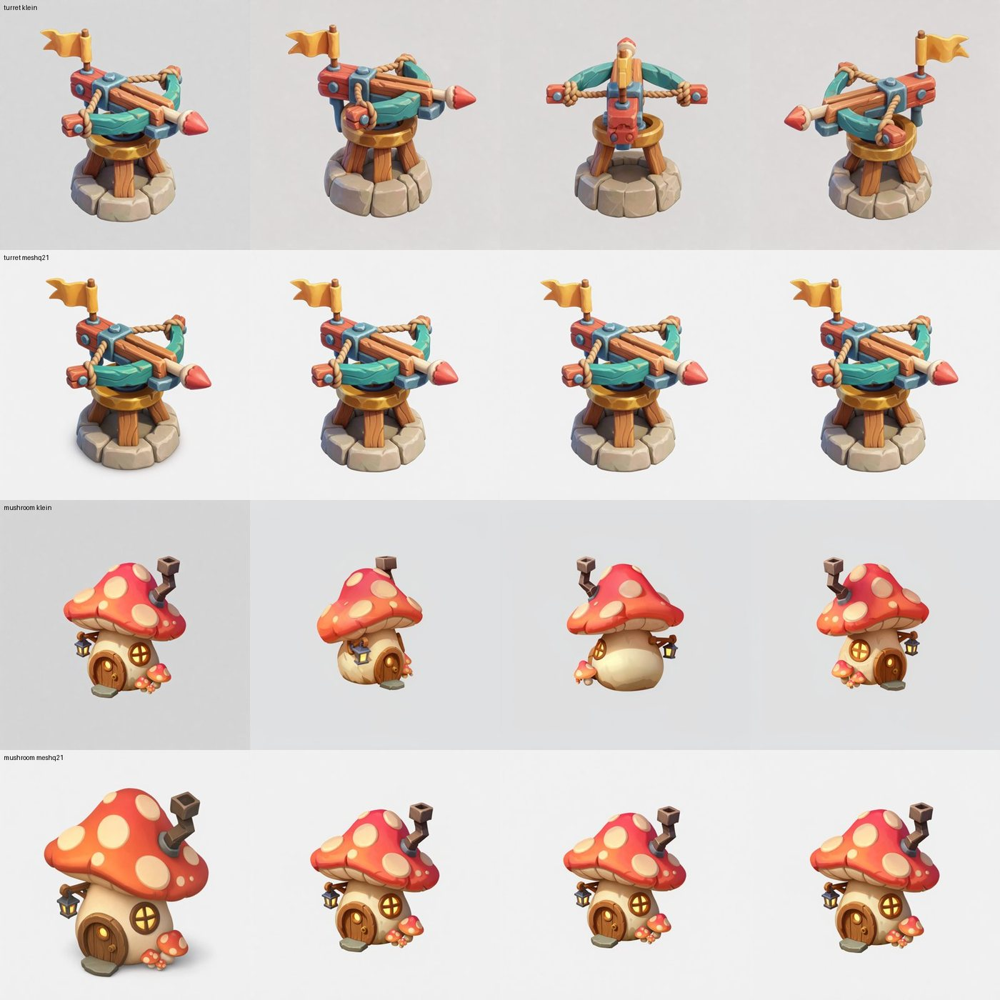
Два способа нарисовать ракурсы. FLUX.3 Klein поворачивает объект, но не ровно на 90°: боковые виды похожи на зеркальный концепт. Qwen 2.1 получил рендер нашей сетки и концепт, а нарисовал четыре раза концепт спереди: он копирует позу референса (как в главе «Перенос по референсу»).
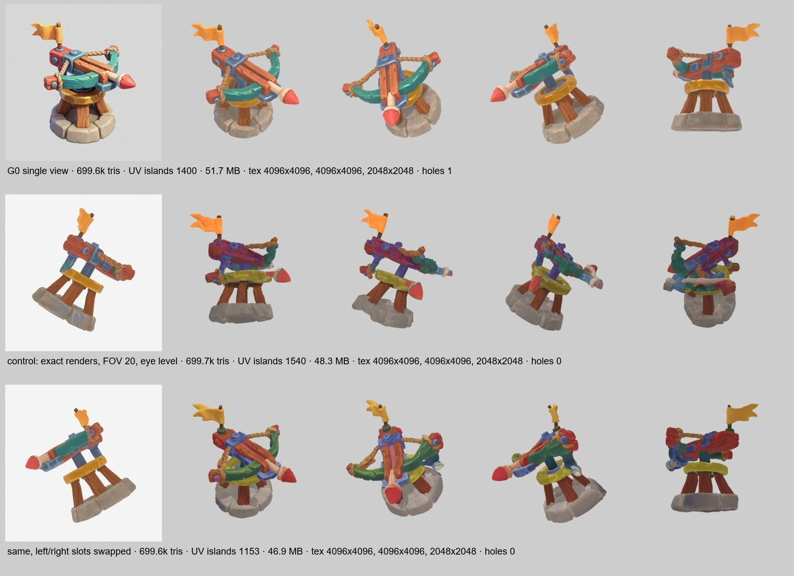
Контроль. Даже точные рендеры нашей сетки с камерой как в шаблоне дали кашу (средний ряд). Причина — порядок слотов: в шаблоне «левый» — это вид, где камера стоит у левого бока объекта, а пример-лист в шаблоне наводит на зеркальную схему. С правильным порядком форма собралась верно (нижний ряд), но текстура пошла пятнами.
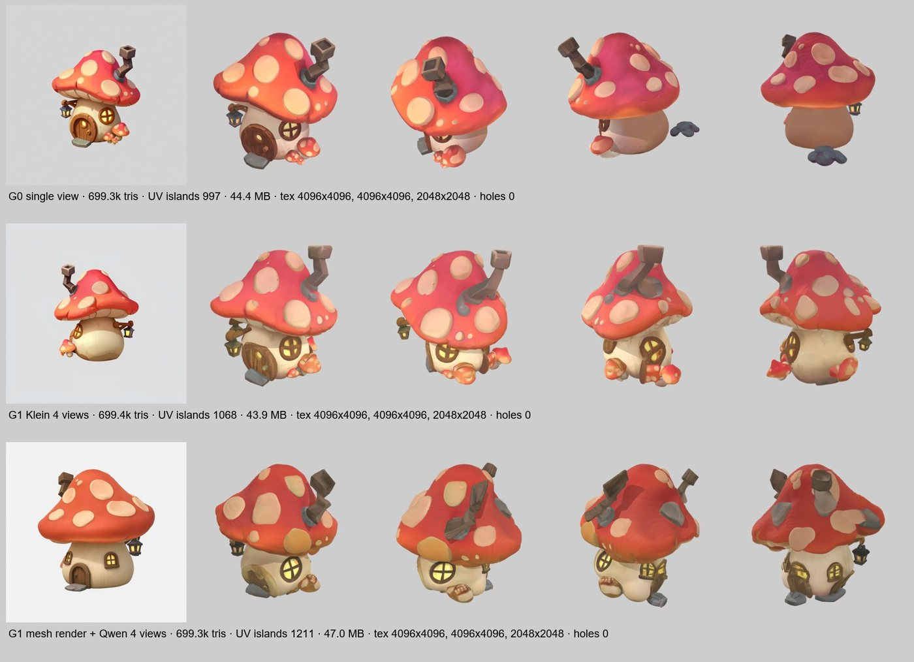
Где ракурсы помогли. Домику ракурсы от Klein дали нормальную спину: светлый ствол с окнами по кругу вместо голой коричневой стены. Цена — лишние двери и чуть более мягкие детали.
Одна картинка — по умолчанию. Твёрдым предметам (турель) ракурсы от ИИ только вредят. ПРАВИЛО
Четыре ракурса — для объектов с большой невидимой стороной, и только если ракурсы согласованы: один угол, одно поле зрения (в шаблоне 20°), правильный порядок слотов. ПРАВИЛО
Хотите, чтобы Qwen 2.1 перерисовал рендер, — дайте ему только рендер. С референсом рядом он копирует позу референса. ЗАМЕР
Многоракурсная сборка — на пределе оперативной памяти: до 60 ГБ из 62. Закрывайте другие программы. ЗАМЕР
До игрового бюджета за один прогон ЗАМЕР
Шаблон ComfyUI уже содержит весь путь доводки, просто настроен на 700 тысяч треугольников и текстуры 4K. Мы раздвоили его хвост. Тяжёлая генерация идёт один раз, а потом три ветки параллельно урезают сетку до бюджета, делают новую развёртку и запекают на неё цвет, нормали и затенение с плотной сетки. Один прогон даёт сразу три версии модели.
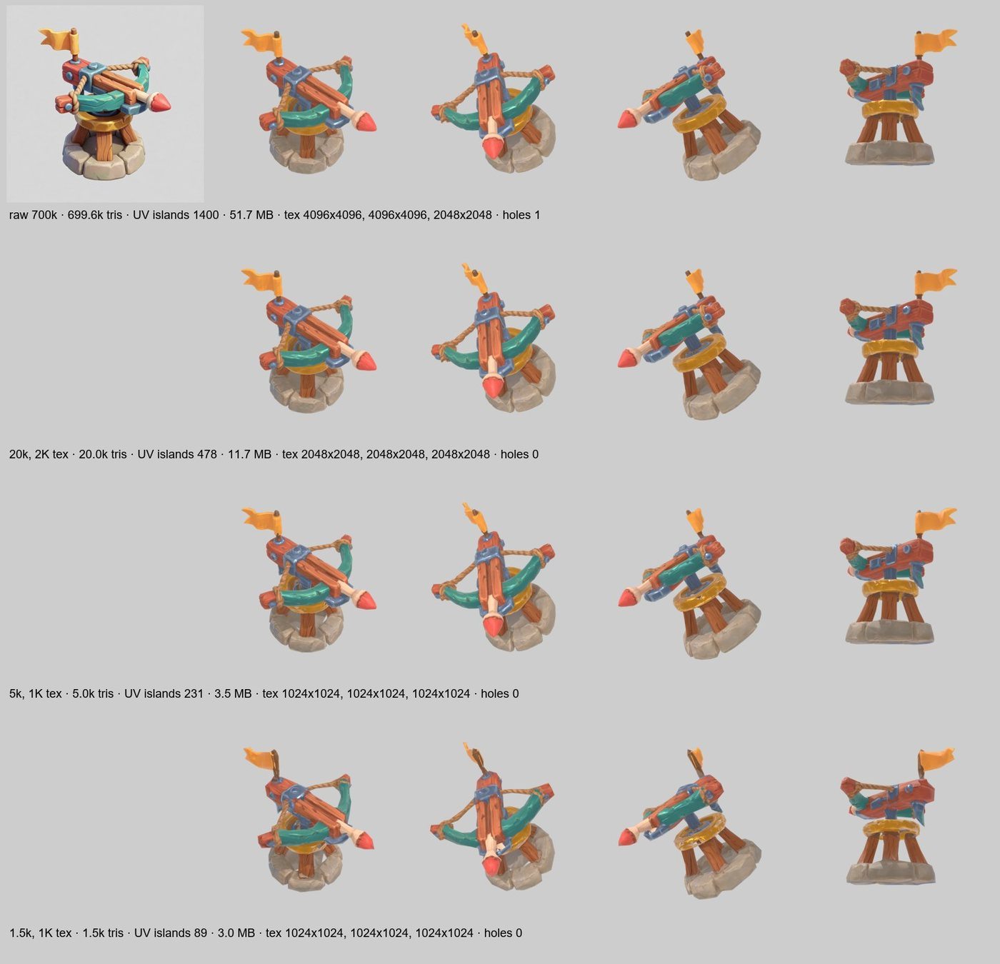
Турель. 20 тысяч треугольников не отличить от сырых 700 тысяч, 5 тысяч почти так же. На 1,5 тысячи флажок и верёвка становятся угловатыми, но турель читается. Детали держит запечённая карта нормалей.
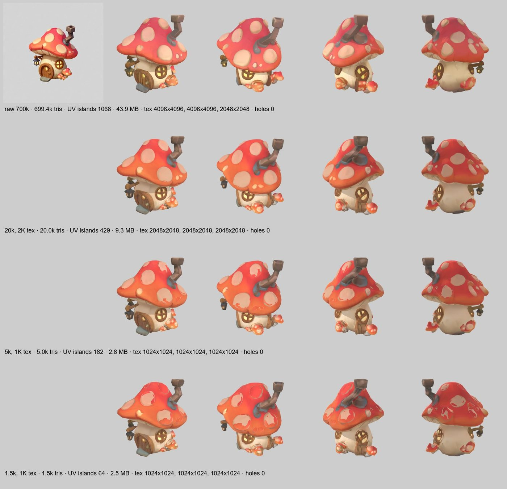
Грибной домик. На 20 тысячах хорошо. На 5 и 1,5 тысячи пятна на шляпке размазались и порезались швами развёртки: большой изогнутой раскрашенной поверхности мало текстуры 1K.
Бюджет
Текстуры
Островов UV
GLB (PNG)
GLB для веба (WebP)
Куда
сырая модель
4K
1000–1400
44–52 МБ
—
только как источник
20k
2K
429–478
9,3–11,7 МБ
2,1–2,5 МБ
герой, крупный план
5k
1K
182–231
2,8–3,5 МБ
0,7–0,8 МБ
предметы и персонажи на поле
1,5k
1K
64–89
2,4–3,0 МБ
0,4–0,6 МБ
дальний LOD
Для статичных предметов Blender на этом шаге не нужен. Встроенный конвейер попадает в бюджет точно, до треугольника, а сетка остаётся замкнутой. ЗАМЕР
Для раскрашенных поверхностей размер текстуры важнее числа треугольников. Домику на 5k нужна 2K-текстура. ПРАВИЛО
Сколько брать: предметы на поле — 5k + 1K, крупный план — 20k + 2K, 1,5k — дальний уровень детализации. Похожие цифры у других: у BrainDead-нод по умолчанию 50k граней и 2048, лоу-поли персонажей в примерах делают около 5k. ИСТОЧНИК
Восемь предметов в одном стиле ЗАМЕР
Игре нужен набор, а не одна красивая модель. Мы написали один стилевой блок промпта и меняли в нём только строку с предметом: бочка, сундук, ящики, фонарь, указатель, пень, башня, колодец. Сид тот же. Концепты Krea 2 — по 6–11 секунд, модели Pixal3D с урезкой до 20k и 5k — по 99–528 секунд. Потом все одиннадцать моделей вместе с турелью, домиком и гномом встали в одну сцену Blender под одно солнце, в реальных размерах.
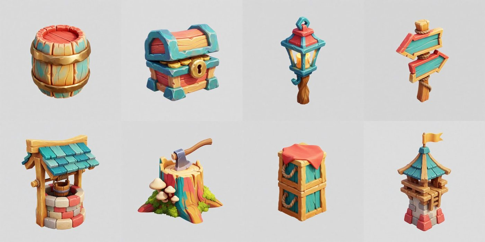
Концепты. Один стилевой блок, восемь строк с предметами.
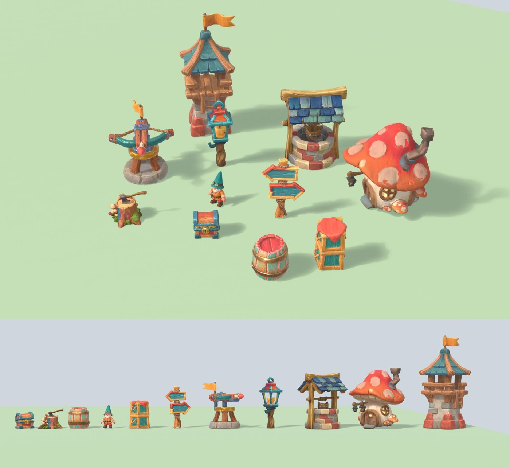
Набор в сцене. Сверху — камера tower defense, снизу — ряд по росту. Одинаковая ручная раскраска, крупные формы, одна реакция на свет: читается как одна игра.
Палитру давайте как акценты. Список цветов в общем блоке перекрасил всё подряд: радужный пень, бирюзовые полосы на бочке. Рабочая формулировка: «природные материалы — природного цвета, акценты только бирюзовые, медовые, коралловые». ЗАМЕР
Стиль держит промпт, а не модель 3D. Pixal3D переносит концепт почти как есть, поэтому единство набора решается на шаге картинки. ПРАВИЛО
Модель стоит криво: выровняйте её ЗАМЕР
Pixal3D строит модель в системе координат камеры концепта. Концепт «вид в три четверти сверху» даёт модель, наклонённую на 15–37° вокруг горизонтальной оси. На витрине это незаметно: зритель сам крутит модель. В сцене предметы заваливаются назад, а при съёмке спрайтов наклонная модель качается от кадра к кадру. Мы заметили это только на гекс-плитках: у них плоское дно.
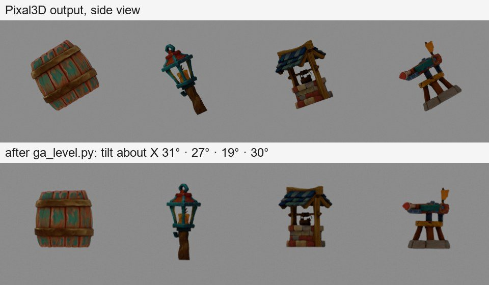
Вид сбоку. Сверху — модели как их отдал Pixal3D, снизу — после скрипта ga_level.py.
Как выровнять: скрипт для Blender перебирает наклон вокруг оси X и выбирает тот, при котором больше всего вершин лежит в нижних 2 % высоты: так ровно встаёт основание. Нашёл 15–36° для предметов и 28–34° для плиток. ЗАМЕР
Анфас и четыре ракурса выравнивать не надо. Гном, нарисованный анфас, и домик из четырёх ракурсов стоят ровно; скрипт на них находит ерунду. ЗАМЕР
Проверяйте каждую модель видом сбоку, прежде чем ставить её в сцену или снимать спрайты. ПРАВИЛО
Спрайты на 32 направления и пиксель-арт ЗАМЕР
Tearevo делает поворот турели видеомоделью и признаётся, что генератор путает стороны. Из 3D-модели углы точные по построению: Blender снимает её ортографической камерой игры под 35° с 32 сторон, свет при этом не крутится. 32 кадра по 256 px — 13 секунд. Скрипт ga_atlas.py собирает из кадров атлас, а с ключом --pixel — пиксель-арт.
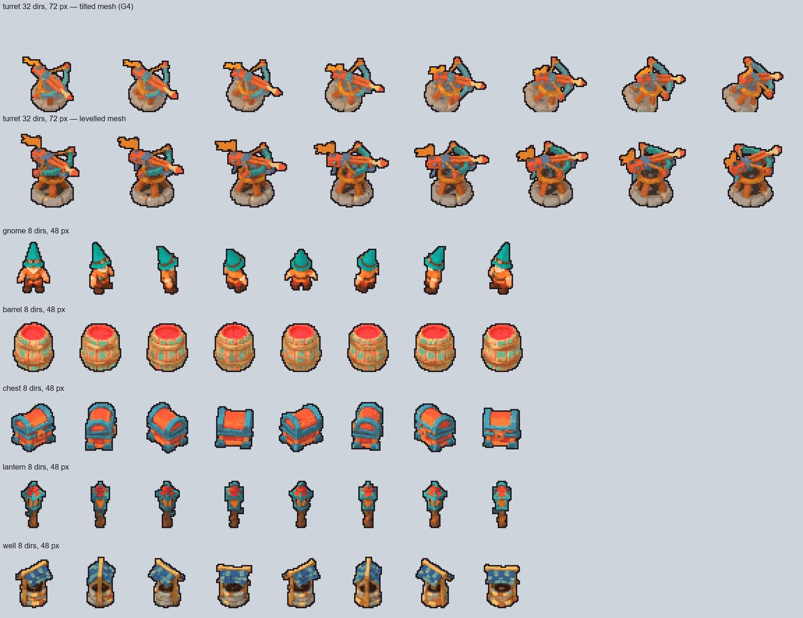
Пиксельные атласы. Турель: 32 направления по 72 px, до и после выравнивания. Гном и предметы: 8 направлений по 48 px.
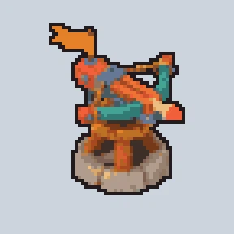
Все 32 кадра подряд, увеличено в 4 раза.
Пиксель-арт из рендера: уменьшить кадр усреднением до сетки, поднять насыщенность и контраст, одна палитра на все кадры, жёсткая прозрачность, обводка в 1 пиксель. ЗАМЕР
Палитру собирайте только из непрозрачных пикселей. С фоном она уезжает в серо-коричневое. ЗАМЕР
Одна палитра на все кадры — и на всю игру. Тогда цвета не мигают между направлениями, а предметы, сделанные по отдельности, смотрятся как набор. Для демо-игры все 22 спрайта сведены к 32 общим цветам. ПРАВИЛО
48 px хватает бочке, сундуку и колодцу. Тонкому фонарю нужно около 64. Гном на 48 px читается, но без анимации ходьбы выглядит деревянным. ЗАМЕР
Один масштаб на все спрайты. Для игры спрайты снимаются не «каждый на весь кадр», а с общим масштабом (у нас 28 px на метр): башня в четыре раза выше гнома. ПРАВИЛО
Гексагональные плитки: целые от ИИ или точный набор ЗАМЕР
Для гекс-стратегии мы проверили два пути на одной карте из 19 клеток. Первый: Krea рисует целую плитку («толстый шестиугольник с землёй по бокам»), Pixal3D делает модель, скрипт вписывает её в правильный шестиугольник. Второй: точная шестигранная призма из Blender, сверху ИИ-текстура, на ней ИИ-предметы — ёлки, домик, гора, поле.
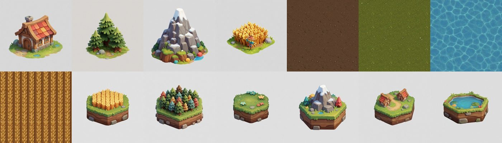
Концепты. Шесть целых плиток, четыре предмета и четыре текстуры вида сверху, один стилевой блок.
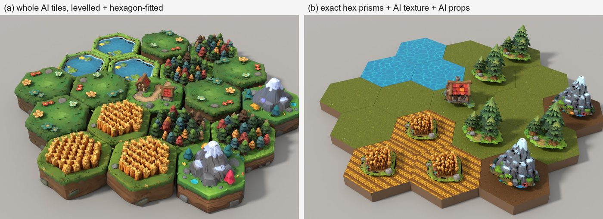
Слева целые плитки, справа точный набор. Целые плитки выглядят богаче: земля по бокам, кувшинки, деревня с тропинкой. Точный набор ровнее, но площе, и у каждого предмета своё пятно травы под ним.
Целые плитки почти шестиугольные: после выравнивания контур отклоняется от правильного шестиугольника на 2,2–4,6 %, от круга — на 3,4–5,9 %. Это шестиугольники со скруглёнными углами: на стыках трёх плиток видны щели. ЗАМЕР
Толщина у целых плиток разная. Чтобы гном ходил ровно, игра меряет высоту земли каждой клетки лучами сверху и ставит его на неё. ЗАМЕР
Одинаковые плитки поворачивайте на 60°: шестиугольник совпадает сам с собой, а повтор перестаёт бросаться в глаза. ПРАВИЛО
Шестигранник Blender лежит «на боку»: первая вершина смотрит вдоль Y. Для сетки с плоским верхом поверните его на 30°, иначе на каждом стыке будет чёрный ромб. ЗАМЕР
Что выбрать: логике игры нужна точная сетка, глазу — целые плитки. Следующий шаг — генерировать целую плитку по рендеру точной призмы как по каркасу. ПРАВИЛО
Оптимизация для движка: что на самом деле ускоряет сцену ЗАМЕР
Сколько стоит сцена из сотен ИИ-моделей и что её спасает? Мы поставили в Godot 4.7 сетку турелей и предметов с шагом 3 метра, камеру под углом игры, солнце с тенями, и замерили время кадра на видеокарте (RTX 5070 Ti, 1280×720). Сравнивали семь вариантов: без уровней детализации, с автоматическими уровнями Godot, с нашей цепочкой 20k / 5k / 1,5k, с MultiMesh, с одинаковыми и с разными предметами.
Вариант
400 копий: мс на GPU
2500 копий: мс на GPU
вызовов отрисовки
треугольников (2500)
турель 20k, уровни детализации выключены
2,12
9,79
29
77 млн
то же, автоматические уровни Godot
0,64
1,94
41
15 млн
наша цепочка 20k → 5k → 1,5k (переключение на 12 и 30 м)
0,29
0,86
34
6,2 млн
турель 5k, без уровней
0,59
2,51
29
19 млн
турель 5k одним MultiMesh
0,81
4,01
9
50 млн
8 разных предметов отдельными узлами
0,59
2,50
177
19 млн
8 предметов как 8 MultiMesh
0,81
3,97
37
50 млн
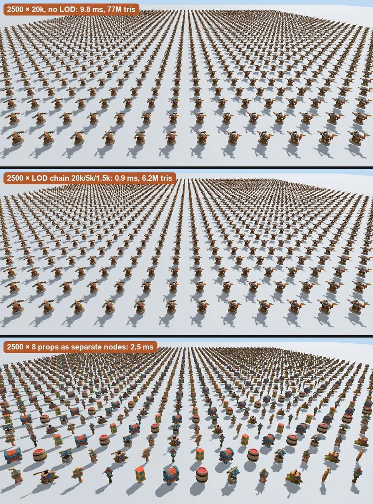
Из камеры игры цепочку не видно. Сверху 2500 турелей по 20k (9,8 мс), посередине та же сцена с цепочкой уровней детализации (0,9 мс), снизу восемь разных предметов (2,5 мс).
Решают треугольники, а не вызовы отрисовки. Godot 4.7 сам объединяет одинаковые модели: 2500 отдельных узлов дают 29 вызовов вместе с тенями. Восемь разных предметов с восемью материалами — 177 вызовов, но время кадра то же. ЗАМЕР
Цепочка уровней детализации из одного прогона ComfyUI окупается сразу: в 11 раз быстрее голых 20k и в 2,3 раза быстрее автоматики Godot. Цена — 32 МБ видеопамяти на три версии сетки. ЗАМЕР
Нет своей цепочки — оставьте автоматические уровни Godot: они включены при импорте по умолчанию и дают ускорение в 5 раз бесплатно. ЗАМЕР
MultiMesh здесь замедлил сцену (4,0 мс против 2,5): у всех копий одна общая рамка, поэтому движок не отсекает копии вне кадра и рисует их во всех каскадах теней. MultiMesh хорош для тысяч мелочей вроде травы и камешков, а не для предметов на поле. ЗАМЕР
Общий атлас текстур экономит только вызовы отрисовки. Раз они не узкое место, на настольной видеокарте атлас для такого набора не нужен. ПРАВИЛО
В браузер и в движок
Сжатие для веба:gltf-transform webp переводит текстуры в WebP и уменьшает GLB в 4–5 раз (с 11,7 до 2,5 МБ). ЗАМЕР
Draco и KTX2 сжимают ещё сильнее (на 70–90 % по документации Unity), но их декодеры <model-viewer> грузит с серверов Google. На страницах со строгой политикой загрузки, как артефакты claude.ai, они не работают. Там — только WebP. ИСТОЧНИК
Показ в странице: веб-компонент Google <model-viewer> 4.3: вращение, приближение, автоповорот и свои кнопки через JS — как в витрине выше. ЗАМЕР
Движок: Godot 4.7 импортирует GLB без настроек и подхватывает все карты PBR. Проверка запускается без окна: godot --headless --import, затем скрипт печатает треугольники и текстуры. ЗАМЕР
2D-ассеты: спрайты, интерфейс, эффекты ИСТОЧНИК
Для двумерной игры у того же Tearevo четыре вида арта и свой приём для каждого. Поворот на 32 направления мы уже сделали из 3D (раздел выше), остальное проверим в следующих сериях.
Вращение на 32 направления. Генератор картинок путает стороны уже после 4–9 видов. Рабочий путь: один вид на зелёном фоне → видеомодель делает полный оборот → кадры режутся в спрайт-атлас. Альтернатива из 3D: рендер модели с 32 углов в Blender даёт точные углы по построению.
Ракурс игры. Набросайте новый объект прямо на скриншоте игры и отдайте скриншот генератору: модель увидит свет, масштаб, палитру и перспективу.
Интерфейс. Сетка из готовых элементов, новые места помечены красными блоками; генератор заменяет красное новыми элементами в том же стиле.
Эффекты. Движение — кодом из простых фигур (круги, волны, частицы) с точным размером и временем жизни, а текстуру и характер добавляет генерация. Целиком сгенерированный взрыв дрожит и плохо отделяется от фона.
Промо-арт. Композицию задаёт ручной скетч; генератор без него ставит героя в центр на уровне глаз.
Что проверяем дальше
Серия
Вопрос
G12
Пиксель-арт прямо из генератора картинок против пиксель-арта из 3D
G13+
Тот же замер на слабой и встроенной видеокарте: там вызовы отрисовки могут стать узким местом
G5
Бесшовные PBR-текстуры земли без видимого шва и запечённого света
G6
Гном: автоматический риг и анимация без ручной работы — настоящая походка для демо-игры
G7
Эффект взрыва: код + текстура против целиком сгенерированного
G8
Сколько качества дают платные Meshy, Rodin, Hunyuan по сравнению с локальным путём
G9–G10
Сцена в Godot и генератор набора ассетов одной командой